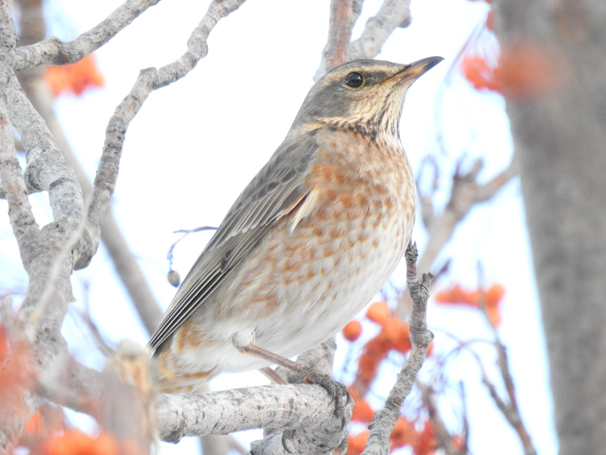

羽・翼について
はじめに申し上げておきますが、私は羽屋と名乗れるような人物ではありません。羽からの種同定に特にこだわりもなければ、落ちている羽の種類がわからなくても結構そのままにして無視してしまうタイプです。ですが、剥製にできない鳥の死体や食痕などから得られる羽はそのまま放置しておくのはもったいないと感じます。羽標本や翼標本は貴重な資料であることには変わりないうえに、剥製では得られない情報(羽1枚単位の長さや翼を広げた時の模様など)も含まれていると考えており、。 そもそも羽を集め始めたきっかけは何だったのでしょう。おそらく小学校に上がる前に読んだ『落としたのは だれ？』という児童書であったと思います。この本に登場するヤマシギやコガモの羽はいつか拾ってみたい羽の1つでした。羽を探すために外出することはありませんでしたが、鳥を見に行くたびに目線を下にやる機会が増えました。特に私はオオタカが繁殖していた雑木林を主な行動域としていたので食痕は比較的身近な存在であり、食痕を見つけるたびにせっせと拾っていた記憶があります。保存も本に書いてあった通りきちんと順番通りに台紙に貼り付け、ファイルに保管していました。

2019・2020年シーズン
ツグミの飛来数は多く、当たり年であったと考えています。また、当時のノートを見るとレンジャクの渡来数が非常に多く、例年よりも終結が早かった年であることが伺えます。ノハラツグミも複数観察されていたようですが私達の観察スキルが足りず、先輩ONの発見した1羽が唯一でした。当時は観察ポイントもピークの時期も忙しい時期と重なってしまったためほとんど時間を割けず、気が付けば終結していた非常に悔しいシーズンでした。
2020.1.5 札幌市
ノドアカツグミ雄成鳥1,ツグミ5±
やはりこの年といえばやはりノドアカを思い出します。先輩チョベリグから突然"ノハラいた"のLINE。偶然300mほどしか離れていない場所で鳥を見ていたのでもちろんダッシュです。到着するなりノドアカやこれ、という衝撃の一言。当初は非常に警戒心が強く、針葉樹に入るとなかなか外に出てきませんでしれません。

2020.1.5 ノドアカツグミ 
2020.1.11 ギンザンマシコ
2020.1.17 江別市
ハチジョウツグミ2,ツグミ200~300,レンジャク1000+
ツグミ観察に慣れていない当時のカウントなのであまり信憑性はありませんが、キレンジャク,ヒレンジャク共に非常に多かったことは間違いないようです。勝手な記憶ですが、ツグミに関してはもう少し数がいたような気がします。この年は1月25日ごろがピークであったと考えています。なお、1月30日にはほぼ終結していた様子です。

2020.1.17 ハチジョウツグミ